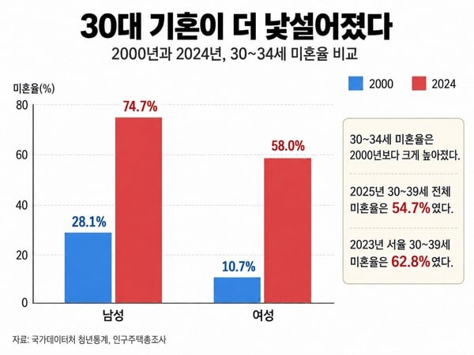
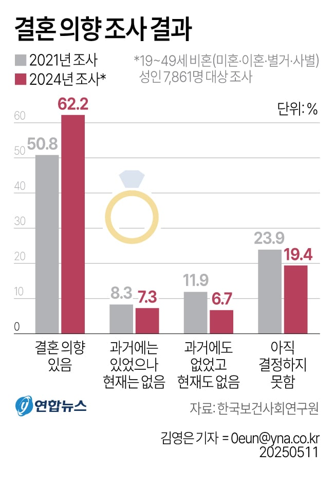
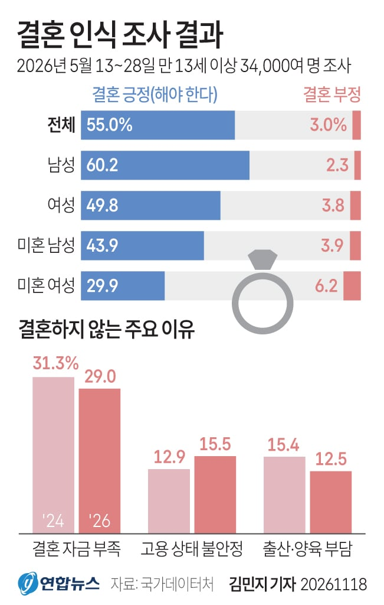

국가데이터처가 어제 발표한 통계에 따르면
2025년 기준 대한민국 30대 미혼율이 53.1%를 돌파함.
남성은 61.1%, 여성은 44.3%임.
25년 전만 해도 30대 미혼율이 13.4%였는데
이제는 결혼한 사람보다 결혼 안 한 사람이 더 많아진 거임.
근데 여기서 존나 웃긴 통계가 하나 더 나옴.

30대 미혼자에게 결혼할 생각이 있냐고 물어봤더니
무려 64.5%가 결혼할 의향이 있다고 대답함.
"결혼은 하고 싶은데 결혼은 안 함."
이게 대체 무슨 소리일까?

별도로 발표된 사회조사 결과를 보면
미혼 남성의 33.7%는 결혼자금 부족을, 14%는 고용 불안을 미혼 사유로 꼽음.
여성도 23%가 결혼자금 부족을 꼽았지만
20.1%는 아예 결혼할 필요성을 못 느낀다고 응답함.
즉, 돈이 없어서 못 하는 사람도 있고
굳이 해야 할 이유를 못 느끼는 사람도 있다는 거임.
여기에 이번 조사에서는 혼인하지 않고 연인과 함께 사는 비혼동거 가구도 17만 4천 가구나 확인됨.
물론 처음 집계한 수치라 증가했다고 단정할 순 없음.
다만 결혼하지 않고도 함께 살아가는 사람들이 그만큼 존재한다는 거임.
생각해보면 불과 한 세대 전만 해도
30대에 결혼 안 하면 주변에서 왜 결혼 안 하냐고 물어봤는데
이제는 30대에 결혼했다는 사람을 보면
"아니 씨발 어떻게 했음?"
하고 물어봐야 할 판임 ㅋㅋㅋ
결혼을 못 하는 사람도 늘고
결혼을 선택하지 않는 사람도 늘면서
과거에는 당연했던 결혼이 이제는 선택이자 경제적 과제가 되어버린 거임.
결혼 적령기라는 말은 아직 살아있는데 정작 그 나이대 절반 이상이 미혼인 시대가 온 거임.
3줄 요약
대한민국 30대 미혼율 53.1%, 남성은 61.1% 돌파.
그런데 30대 미혼자의 64.5%는 여전히 결혼할 생각이 있음.
이제는 결혼이 당연한 시대가 아니라 결혼하는 게 특별해지는 시대임.
출처:
국가데이터처 2025 인구주택총조사 (2026.11.24)
https://www.korea.kr/briefing/policyBriefingView.do?newsId=156790558
한국경제 (2026.11.24)
https://www.hankyung.com/article/2026112479037
댓글
수집 당시 댓글 428개
· ㅇㅇ · 11.27 01:50:06
ㅇㅇ · 11.27 01:26:17
· ㅇㅇ · 11.27 01:26:52
· 불편한팩트 · 11.27 06:03:22
· ㅇㅇ · 11.27 17:16:57
ㅇㅇ · 11.27 01:49:52
ㅇㅇ · 11.27 01:49:56
ㅇㅇ · 11.27 02:14:43
도태
한남
· ㅇㅇ · 11.27 02:15:24
閉経
韓女
ㅇㅇ · 11.27 02:14:59
ㅇㅇ · 11.27 02:26:46
ㅇㅇ · 11.27 02:31:52
ㅇㅇ · 11.27 02:34:23
· Machiavelli · 11.27 13:09:59
ㅇㅇ · 11.27 02:34:40
ㅇㅇ · 11.27 03:08:30
ㅇㅇ · 11.27 03:26:03
ㅇㅇ · 11.27 04:27:40
ㅇㅇ · 11.27 04:39:50
· ㅇㅇ · 11.27 04:40:30
· ㅇㅇ · 11.27 04:40:48
· ㅇㅇ · 11.27 04:43:35
· ㅇㅇ · 11.27 04:44:07
· ㅇㅇ · 11.27 04:45:08
· ㅇㅇ · 11.27 04:45:40
ㅇㅇ · 11.27 05:40:28
ㅇㅇ · 11.27 06:11:25
· ㅇㅇ · 11.27 06:12:18
ㅇㅇ · 11.27 06:23:35
ㅇㅇ · 11.27 06:26:45
ㅇㅇ · 11.27 07:17:43
ㅇㅇ · 11.27 07:28:25
ㅇㅇ · 11.27 07:48:43
엑실리아 · 11.27 07:59:40
ㅇㅇ · 11.27 08:07:51
ㅇㅇ · 11.27 08:12:18
원또 · 11.27 08:21:09
ㅇㅇ · 11.27 08:23:46
· 안토니오 · 11.27 16:19:08
ㅇㅇ · 11.27 08:50:31
kawa · 11.27 08:53:41
· 안토니오 · 11.27 16:19:34
ㅇㅇ · 11.27 08:57:58
· 28. · 11.27 14:30:45
ㅇㅇ · 11.27 09:28:08
ㅇㅇ · 11.27 09:30:33
· ㅇㅇ · 11.27 09:43:38
· ㅇㅇ · 11.27 09:47:34
· ㅇㅇ · 11.27 10:05:02
· Machiavelli · 11.27 13:17:29
· ㅇㅇ · 11.27 14:24:50
· ㅇㅇ · 11.27 14:25:32
· Machiavelli · 11.27 14:26:53
Honsound · 11.27 09:37:28
· Machiavelli · 11.27 13:19:23
· 28. · 11.27 14:31:35
· Machiavelli · 11.27 14:37:30
· 28. · 11.27 14:47:21
· Machiavelli · 11.27 14:51:25
· Machiavelli · 11.27 14:51:59
· 28. · 11.27 15:23:13
· Machiavelli · 11.27 15:25:17
· 28. · 11.27 15:27:46
ㅇㅇ · 11.27 09:39:24
ㅇㅇ · 11.27 09:49:45
· ㅇㅇ · 11.27 09:49:54
· 안토니오 · 11.27 16:20:58
ㅇㅇ(180.71) · 11.27 10:03:48
ㅇㅇ · 11.27 10:18:30
주소킹 · 11.27 10:24:18
· 주소킹 · 11.27 10:24:23
ㅇㅇ · 11.27 10:27:32
지열극나길자 · 11.27 11:06:11
ㅇㅇ · 11.27 11:21:16
ㅇㅇ · 11.27 11:28:56
ㅇㅇ · 11.27 11:36:50
ㅇㅇ · 11.27 11:39:02
ㅇㅇ · 11.27 11:46:12
ㅇㅇ · 11.27 11:49:43
· ㅇㅇ · 11.27 11:49:56
· 바이오엔진 · 11.27 12:19:00
ㅇㅇ · 11.27 11:50:56
· ㅇㅇ · 11.27 11:52:09
ㅇㅇ · 11.27 11:52:36
ㅇㅇ · 11.27 12:31:01
ㅇㅇ · 11.27 13:03:15
· 안토니오 · 11.27 16:21:25
ㅇㅇ · 11.27 13:10:25
ㅇㅇ · 11.27 13:11:31
· 익명 · 11.27 13:53:43
00 · 11.27 14:12:19
카루짱 · 11.27 14:34:17
ㅇㅇ · 11.27 14:42:28
ㅇㅇ · 11.27 15:02:58
· ㅇㅇ · 11.27 15:03:05
ㅇㅇ · 11.27 15:24:07
ㅇㅇ · 11.27 15:35:51
· ㅇㅇ · 11.27 15:36:23
ㅇㅇ · 11.27 18:18:04
· ㅇㅇ · 11.27 20:00:28
ㅇㅇ · 11.26 23:19:00
· ㅇㅇ · 11.27 02:21:47
ㅇㅇ · 11.26 23:21:39
· ㅇㅇ · 11.26 23:31:30
히이잉 · 11.26 23:23:19
ㅇㅇ · 11.26 23:23:25
· ㅇㅇ · 11.27 01:18:33
· ㅇㅇ · 11.27 01:58:27
· 불편한팩트 · 11.27 06:06:21
ㅇㅇ · 11.26 23:24:22
ㅇㅇ · 11.26 23:24:41
ㅇㅇ · 11.26 23:25:07
· ㅇㅇ · 11.26 23:25:55
· ㅇㅇ · 11.26 23:26:12
· ㅇㅇ · 11.26 23:26:36
ㅇㅇ · 11.26 23:27:04
· ㅇㅇ · 11.26 23:27:12
· ㅇㅇ · 11.26 23:28:26
ㅇㅇ · 11.26 23:27:35
ㅇㅇ · 11.26 23:28:32
ㅇㅇ · 11.26 23:31:31
ㅇㅇ · 11.26 23:33:19
ㅇㅇ · 11.26 23:33:49
ㅇㅇ · 11.26 23:34:21
ㅇㅇ · 11.26 23:35:09
· ㅇㅇ · 11.26 23:37:10
ㅇㅇ · 11.26 23:35:19
ㅇㅇ · 11.26 23:35:32
ㅇㅇ · 11.26 23:35:47
ㅇㅇ · 11.26 23:36:25
ㅇㅇ · 11.26 23:37:32
ㅇㅇ · 11.26 23:40:14
· ㅇㅇ · 11.26 23:45:34
· ㅇㅇ · 11.26 23:45:38
· 지열극나길자 · 11.27 00:10:18
ㅇㅇ · 11.26 23:40:27
ㅇㅇ · 11.26 23:42:16
ㅇㅇ · 11.26 23:42:35
ㅇㅇ · 11.26 23:43:52
ㅇㅇ · 11.26 23:44:25
ㅇㅇ · 11.26 23:46:19
ㅇㅇ · 11.26 23:46:52
· ㅇㅇ · 11.26 23:48:25
ㅇㅇ · 11.26 23:47:29
ㅇㅇ · 11.26 23:49:16
ㅇㅇ · 11.26 23:49:47
ㅇㅇ · 11.26 23:50:43
· ㅇㅇ · 11.27 01:00:01
ㅇㅇ · 11.26 23:50:45
ㅇㅇ · 11.26 23:50:46
ㅇㅇ · 11.26 23:51:50
ㅇㅇ · 11.26 23:53:05
· 28. · 11.27 14:27:45
ㅇㅇ · 11.26 23:53:42
ㅇㅇ · 11.26 23:54:15
ㅇㅇ · 11.26 23:57:30
무슬림
조선족
동남아
· ㅇㅇ · 11.26 23:57:44
분들
난민으로
받음댐
ㄱㅊㄱㅊ
ㅇㅇ · 11.27 00:00:27
ㅇㅇ · 11.27 00:03:24
ㅇㅇ · 11.27 00:03:25
ㅇㅇ · 11.27 00:08:04
ㅇㅇ · 11.27 00:08:17
kawa · 11.27 00:08:39
· ㅇㅇ · 11.27 00:25:36
ㅇㅇ · 11.27 00:10:40
지열극나길자 · 11.27 00:11:50
· 흑단냥이 · 11.27 07:54:37
Doll · 11.27 00:13:29
ㅇㅇ · 11.27 00:17:18
ㅇㅇ · 11.27 00:18:30
ㅇㅇ · 11.27 00:25:13
· 28. · 11.27 14:28:22
ㅇㅇ · 11.27 00:30:58
· ㅇㅇ · 11.27 00:39:35
· ㅇㅇ · 11.27 01:23:01
· ㅇㅇ · 11.27 01:23:47
ㅇㅇ · 11.27 00:35:34
ㅇㅇ · 11.27 00:38:59
· ㅇㅇ · 11.27 00:57:10
ㅇㅇ · 11.27 00:40:05
ㅇㅇ · 11.27 00:40:51
딸흐앙 · 11.27 00:45:48
파치카 · 11.27 00:49:15
ㅇㅇ · 11.27 00:55:47
나거한 · 11.27 00:57:07
· 나거한 · 11.27 00:57:25
· 나거한 · 11.27 00:57:41
· 나거한 · 11.27 00:57:55
ㅇㅇ · 11.27 00:58:07
취집
적령기
겠지
ㅇㅇ · 11.27 01:02:56
· ㅇㅇ · 11.27 01:26:45
· 28. · 11.27 14:28:55
ㅇㅇ · 11.27 01:11:06
ㅇㅇ · 11.27 01:17:11
· ㅇㅇ · 11.27 01:40:01
ㅇㅇ · 11.27 01:21:12
ㅇㅇ · 11.27 01:23:57
· ㅇㅇ · 11.27 01:24:02
· 불편한팩트 · 11.27 06:01:45
ㅇㅇ · 11.27 01:25:37
· ㅇㅇ · 11.26 23:22:34
· ㅇㅇ · 11.26 23:23:09
· ㅇㅇ · 11.26 23:23:30
· ㅇㅇ · 11.26 23:23:54
· ㅇㅇ · 11.26 23:27:15
· ㅇㅇ · 11.26 23:28:08
· ㅇㅇ · 11.26 23:28:47
· ㅇㅇ · 11.26 23:30:08
· ㅇㅇ · 11.26 23:30:44
· ㅇㅇ · 11.26 23:31:08
· ㅇㅇ · 11.26 23:32:38
· ㅇㅇ · 11.27 07:07:07
ㅇㅇ · 11.26 22:55:33
ㅇㅇ · 11.26 22:55:41
ㅇㅇ · 11.26 22:55:53
ㅇㅇ · 11.26 22:56:28
· ㅇㅇ · 11.26 23:01:25
· ㅇㅇ · 11.26 23:11:09
· ㅇㅇ · 11.26 23:46:39
· 불편한팩트 · 11.27 06:15:47
ㅇㅇ · 11.26 22:56:57
· ㅇㅇ · 11.26 22:58:07
· ㅇㅇ · 11.26 22:59:45
· ㅇㅇ · 11.26 23:00:26
30대 아줌마
· ㅇㅇ · 11.26 23:02:40
· ㅇㅇ · 11.26 23:05:45
그런다고 없는 퐁퐁이는 안생긴다
· ㅇㅇ · 11.26 23:08:46
· ㅇㅇ · 11.26 23:10:10
퐁~퐁
· ㅇㅇ · 11.26 23:16:10
· ㅇㅇ · 11.26 23:16:40
· ㅇㅇ · 11.26 23:22:13
섹스100배영포티 ㅋㅋ
· ㅇㅇ · 11.26 23:24:24
ㅇㅇ · 11.26 22:57:00
· ㅇㅇ · 11.26 23:01:21
ㅇㅇ · 11.26 22:57:12
· ㅇㅇ · 11.26 23:54:33
· 지열극나길자 · 11.27 00:16:13
· ㅇㅇ · 11.27 10:10:57
히이잉 · 11.26 22:57:15
ㅇㅇ · 11.26 22:57:44
· ㅇㅇ · 11.26 23:57:54
· 28. · 11.27 14:21:17
ㅇㅇ · 11.26 22:58:29
ㅇㅇ · 11.26 22:58:40
ㅇㅇ · 11.26 22:59:00
· ㅇㅇ · 11.26 23:02:58
· ㅇㅇ · 11.26 23:05:58
ㅇㅇ · 11.26 22:59:52
· ㅇㅇ · 11.27 02:25:26
ㅇㅇ · 11.26 23:00:06
ㅇㅇ · 11.26 23:00:50
타이밍뒷통수한방 · 11.26 23:01:53
ㅇㅇ · 11.26 23:02:03
ㅇㅇ · 11.26 23:03:27
· ㅇㅇ · 11.26 23:18:56
· ㅇㅇ · 11.26 23:19:44
· 지열극나길자 · 11.26 23:56:21
· ㅇㅇ · 11.27 02:11:33
· ㅇㅇ · 11.27 02:11:51
ㅇㅇ · 11.26 23:03:47
파래진다아아아 · 11.26 23:05:11
ㅇㅇ · 11.26 23:05:31
ㅇㅇ · 11.26 23:05:44
micro멍거 · 11.26 23:06:57
사념체 · 11.26 23:07:03
ㅇㅇ · 11.26 23:07:54
· ㅇㅇ · 11.26 23:11:33
· ㅇㅇ · 11.26 23:25:22
ㅇㅇ · 11.26 23:08:04
· ㅇㅇ · 11.26 23:11:02
· ㅇㅇ · 11.26 23:11:27
· ㅇㅇ · 11.26 23:14:46
· ㅇㅇ · 11.26 23:29:20
· ㅇㅇ · 11.27 00:54:23
· 불편한팩트 · 11.27 06:18:21
ㅇㅇ · 11.26 23:09:36
· 지열극나길자 · 11.27 00:01:51
ㅇㅇ · 11.26 23:10:59
ㅇㅇ · 11.26 23:11:01
ㅇㅇ · 11.26 23:11:58
· ㅇㅇ · 11.27 00:55:40
· ㅇㅇ · 11.27 02:20:56
ㅇㅇ · 11.26 23:12:13
ㅇㅇ · 11.26 23:12:22
· ㅇㅇ · 11.26 23:12:47
ㅇㅇ · 11.26 23:14:40
· ㅇㅇ · 11.26 23:15:24
· ㅇㅇ · 11.26 23:20:32
· ㅇㅇ · 11.26 23:24:32
· ㅇㅇ · 11.26 23:50:08
· ㅇㅇ · 11.27 00:21:34
· ㅇㅇ · 11.27 05:44:36
ㅇㅇ · 11.26 23:15:32
· ㅇㅇ · 11.27 01:49:08
ㅇㅇ · 11.26 23:16:12
· ㅇㅇ · 11.26 23:22:40
· ㅇㅇ · 11.26 23:42:16
· ㅇㅇ · 11.27 01:49:33
ㅇㅇ · 11.26 23:17:28
ㅇㅇ · 11.26 23:18:00
· 아기도깨비엄지 · 11.25 21:27:51
· ㅇㅇ · 11.26 22:55:10
· ㅇㅇ · 11.26 23:00:19
ㅇㅇ · 11.25 20:45:45
ㅇㅇ · 11.25 20:48:38
ㅇㅇ · 11.25 20:56:31
ㅇㅇ · 11.25 21:01:56
· ㅇㅇ · 11.25 22:24:17
· 안될거뭐있노. · 11.26 22:54:33
ㅇㅇ · 11.25 21:04:04
ㅇㅇ · 11.25 21:28:27
ㅇㅇ · 11.25 21:30:11
ㅇㅇ · 11.25 21:35:27
ㅇㅇ · 11.25 21:35:35
LapisLazuli · 11.25 21:37:55
· ㅇㅇ · 11.25 21:52:37
· ㅇㅇ · 11.25 22:05:47
ㅇㅇ · 11.25 22:20:56
ㅇㅇ · 11.25 22:26:30
ㅇㅇ · 11.25 22:28:11
· Hololive만본다 · 11.26 22:47:55
· ㅇㅇ · 11.26 22:57:42
키리사메 · 11.25 22:36:08
ㅇㅇ · 11.25 22:40:17
· ㅇㅇ · 11.25 22:41:00
· ㅇㅇ · 11.26 22:45:54
· ㅇㅇ · 11.26 22:46:23
· ㅇㅇ · 11.26 22:50:56
맥스웰테슬라 · 11.25 22:49:03
밋아 · 11.25 23:08:22
찬비랭 · 11.26 01:54:37
· ㅇㅇ · 11.26 23:15:08
Hololive만본다 · 11.26 22:45:30
· ㅇㅇ · 11.26 23:45:13
ㅇㅇ · 11.26 22:46:09
헌트 · 11.26 22:46:26
ㅇㅇ · 11.26 22:46:30
ㅇㅇ · 11.26 22:46:32
· Wasd · 11.26 22:52:28
봇치쟝 · 11.26 22:46:36
ㅇㅇ · 11.26 22:47:04
ㅇㅇ · 11.26 22:47:04
o.o · 11.26 22:47:07
123 · 11.26 22:47:10
실베도로롱 · 11.26 22:47:12
· 실베도로롱 · 11.26 22:47:24
· Wasd · 11.26 22:52:16
ㅇㅇ · 11.26 22:47:17
ee · 11.26 22:47:20
2대남 · 11.26 22:47:45
· Hololive만본다 · 11.26 22:48:44
· ㅇㅇ · 11.26 22:48:55
· 28. · 11.27 14:19:42
ㅇㅇ · 11.26 22:48:24
레버인생베팅 · 11.26 22:49:01
· ㅇㅇ · 11.26 22:50:08
ㅇㅇ · 11.26 22:49:22
ㅇㅇ · 11.26 22:49:46
ㅇㅇ · 11.26 22:49:59
ㅇㅇ · 11.26 22:50:17
· ㅇㅇ · 11.26 22:51:42
· ㅇㅇ · 11.26 23:22:00
뾰지 · 11.26 22:50:22
ㅇㅇ · 11.26 22:51:01
Wasd · 11.26 22:51:40
· 실베도로롱 · 11.26 22:59:03
· ㅇㅇ · 11.26 23:12:54
ㅇㅇ · 11.26 22:52:12
ㅇㅇ · 11.26 22:52:26
ㅇㅇ · 11.26 22:52:54
· ㅇㅇ · 11.26 22:54:24
· ㅇㅇ · 11.26 22:55:56
· ㅇㅇ · 11.26 22:56:44
ㅇㅇ · 11.26 22:53:07
· ㅇㅇ · 11.26 22:53:24
ㅇㅇ · 11.26 22:53:14
ㅇㅇ · 11.26 22:53:15
· ㅇㅇ · 11.26 22:55:50
ㅇㅇ · 11.26 22:53:41
Adriel · 11.26 22:54:26
ㅇㅇ · 11.26 22:55:03
· ㅇㅇ · 11.26 23:19:52
ㅇㅇ · 11.26 22:55:21
· ㅇㅇ · 11.26 22:57:33
· ㅇㅇ · 11.26 22:58:53
· ㅇㅇ · 11.26 23:00:50
· ㅇㅇ · 11.26 23:01:41
· ㅇㅇ · 11.26 23:06:08
· ㅇㅇ · 11.26 23:12:20
· ㅇㅇ · 11.26 23:14:42
· ㅇㅇ · 11.26 23:15:46
· ㅇㅇ · 11.26 23:16:11
· ㅇㅇ · 11.26 23:17:22
· ㅇㅇ · 11.26 23:18:11
· ㅇㅇ · 11.26 23:18:13
· ㅇㅇ · 11.26 23:19:45
· ㅇㅇ · 11.26 23:20:39
· ㅇㅇ · 11.26 23:20:43
· ㅇㅇ · 11.26 23:21:12
· ㅇㅇ · 11.26 23:21:42
ㅇㅇ · 11.25 20:33:55
ㅇㅇ · 11.25 20:34:19
닭장매니아 · 11.25 20:34:40
치즈망고 · 11.25 20:35:12
· ㅇㅇ · 11.25 20:36:05
· 치즈망고 · 11.25 20:37:49
· ㅇㅇ · 11.25 20:37:54
· ㅇㅇ · 11.25 20:37:57
· ㅇㅇ · 11.25 21:48:30
· ㅇㅇ · 11.26 22:47:25
· ㅇㅇ · 11.26 22:48:21
· ㅇㅇ · 11.26 22:54:13
· ㅇㅇ · 11.26 22:57:54
· 28. · 11.27 14:16:59
ㅇㅇ · 11.25 20:35:40
ㅇㅇ · 11.25 20:38:37
· ㅇㅇ · 11.25 20:39:53
· ㅇㅇ · 11.25 20:40:05
ㅇㅇ · 11.25 20:39:28
· ㅇㅇ · 11.26 02:03:05
· ㅇㅇ · 11.26 04:24:44
· ㅇㅇ · 11.26 05:51:53
· ㅇㅇ · 11.26 22:55:57
· ㅇㅇ · 11.26 22:56:51
· ㅇㅇ · 11.26 23:01:54
· ㅇㅇ · 11.27 00:22:43
· 28. · 11.27 14:17:40
ㅇㅇ · 11.25 20:41:47